의공산업기사 (2017-09-23 기출문제)
1과목: 기초의학 및 의공학
1. 디지털화하여 저장된 신호를 아날로그 신호로 변환시켜 주는 장치는?
- ADC
- TDC
- DAC
- CFD
(정답률: 96%)

2. 다음 중 세포막에 대한 내용으로 옳지 않은 것은?
- 세포막은 인지질의 단일층으로 구성된다.
- 세포막의 표면에 표면단백질이 있다.
- 세포막은 유동적이다.
- 일반적으로 세포막은 많은 노폐물을 통과시킨다.
(정답률: 74%)
3. 다음 전극 중 순간적으로 가장 많은 전류가 흐를 수 있는 것은?
- 심전도(ECG) 측정용 전극
- 뇌전도(EEG) 측정용 전극
- 근전도(EMG) 측정용 전극
- 심장 제세동기(defibrillator)용 전극
(정답률: 96%)
4. 금속저항 온도계에 대한 설명으로 옳은 것은?
- 금속의 온도가 올라감에 따라 저항이 감소된다.
- 귀금속은 보통 금속에 비해 온도계수가 더 작아 유리하다.
- 온도 이외의 물리적 환경 변화에 의해 반응할 수도 있다.
- 가능하면 큰 전류를 흐르게 하는 것이 유리하다.
(정답률: 65%)
5. 다음 ()안에 알맞은 것은?
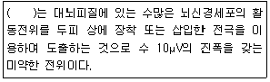
- 근전도(electromyogram, EMG)
- 유발전위(evoked potential, EP)
- 심전도(electrocardiogram, ECG)
- 뇌전도(electroencephalogram, EEG)
(정답률: 99%)
6. 다음 ()안에 들어갈 알맞은 전극은?
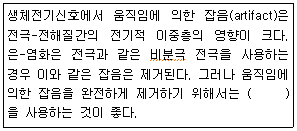
- 금속플레이트 전극(Metal-plate electrode)
- 접시 전극(Metal-disk electrode)
- 흡반(흡입) 전극(Suction electrode)
- 부유 전극(Floating electrode)
(정답률: 86%)
7. 선형 가변 타동변화기(LVDT)의 장점이 아닌 것은?
- 위상변화를 갖는다.
- 넓은 주파수 대역에서 선형성을 나타낸다.
- 복잡한 신호처리 과정을 거쳐야 한다.
- 크기와 모양을 다양하게 만들 수 있다.
(정답률: 89%)
8. 종격이란 용어가 나타내는 의미로 옳은 것은?
- 척추와 폐 사이
- 폐와 폐 사이
- 심장과 폐 사이
- 심장과 횡경막 사이
(정답률: 71%)
9. 심전도 파형의 의미로 옳지 않은 것은?
- T파는 심방의 재분극
- Q파는 심실 격벽의 탈분극
- R파는 심실의 탈분극
- P파는 심방의 탈분극
(정답률: 88%)
10. 다음 그림은 일회용 금속판 전극(disposable electrode)을 나타낸 것이다. 그림에서 금속판 부분은?
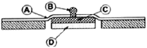
- A
- B
- C
- D
(정답률: 91%)
11. 다음 중 교감 신경과 관련 없는 것은?
- 소화액 분비를 증가시킨다.
- 스트레스가 많아지면 활성화된다.
- 중추는 척수의 흉요부측각(胸腰部側角)에 있다.
- 분비선을 관류하는 혈관들의 수축을 일으킨다.
(정답률: 82%)
12. 인체 평면과 관련된 용어 중 인체를 수직으로 나누어 좌우로 이등분한 수직면을 의미하는 용어는?
- 시상면(Sagittal Plane)
- 횡단면(Transverse Plane)
- 전두면(Frontal Plane)
- 단층면(Cross section)
(정답률: 89%)
13. 심전도 유도방법 중 단극 유도법(unipolar lead system) 개념을 간략화시킨 것이다. 그림과 같이 관측전극이 심근섬유 중간에서 탈분극의 활동을 측정하였을 경우에 나타나는 파형의 형태는?
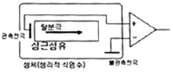
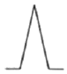
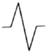
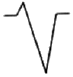
(정답률: 69%)
14. 압전 소자에 대한 설명으로 틀린 것은?
- 전압을 가하면 변형이 생기는 소자
- 물리적 압력이 가해지면 전위가 발생하는 소자
- 전위로부터 변위나 압력변화를 측정할 수 있는 소자
- 서로 다른 두 금속의 접합부로 이루어져 있으며 양단의 온도차에 의해 기전력이 발생하는 소자
(정답률: 83%)
15. 악성 빈혈이 발생하는 원인으로 옳은 것은?
- 철분의 부적절한 흡수나 상실로 인해
- 만성 혈액 손실로 인해
- 내인자의 결핍으로 인해
- 과다한 적혈구의 파괴로 인해
(정답률: 63%)
16. 의료용 전극의 조건으로 적당하지 않은 것은?
- 낮은 분극전압
- 높은 접촉전항
- 안정적인 접촉 유지
- 피부 자극이 낮음
(정답률: 81%)
17. 전극을 인체에 붙였을 때, 전극을 이루는 금속 재질이 전해용액 속에서 녹는 성질과 용액 내의 이온이 금속과 결합하는 현상에 의해 금속과 용액 사이에 전위가 형성되는 것은 무엇인가?
- 반전지 전위(half-cell porential)
- 압전 효과(piezoelectric effect)
- 생체 전기(bio effect)
- 도플러 효과(doppler's effect)
(정답률: 91%)
18. 휴지기 전위를 조정하는 메커니즘에 대한 설명 중 옳은 것은?
- 휴지 상태의 세포막은 일반적으로 K+ 이온도바 Na+ 이온을 더 잘 통과시킨다.
- 삼투 현상에 의해 이온이 이동된다.
- 크기가 큰 음전하의 단백질은 세포막을 통과하여 세포 내에 존재하게 된다.
- Na+/K+펌프는 Na+이온을 3개 내보낼 때 K+이온이 2개 들어온다.
(정답률: 86%)
19. 용량성 센서에 관한 설명 중 틀린 것은?
- 변위에 의한 양을 측정할 수 있다.
- 평행차의 면적, 거리, 투자율의 변화와 관련된다.
- 커패시터의 정전용량을 측정하는 것이다.
- 일반적으로 교류 신호를 인가하여 측정한다.
(정답률: 51%)
20. 가변저항 센서의 특징으로 틀린 것은?
- 직류에서만 사용할 수 있다.
- 선형성이 좋다.
- 회전변위 측정이 가능하다.
- 측정 범위가 넓다.
(정답률: 88%)
2과목: 의용전자공학
21. 다음 회로의 출력전압은?
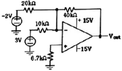
- -8[V]
- +8[V]
- -6[V]
- +6[V]
(정답률: 60%)
22. 반도체에 관한 설명 중 틀린 것은?
- 진성반도체는 금속보다는 크고, 절연체보다 작은 저항을 갖는다.
- 진성반도체에 비소, 안티몬 등을 첨가하여 n형 반도체를 만든다.
- P형 반도체에 첨가된 불순물을 억셉터라 부른다.
- 반도체는 온도가 상승하면 도전율이 감소한다.
(정답률: 75%)
23. 펄스 변조 방식의 하나로 변조 신호의 크기에 따라서 진폭이나 폭이 일정한 단위 펄스를 일정 시간 내에 그 수를 변화시켜서 변조하는 방식은?
- PAM(Pulse Amplitude Modulation)
- PWM(Pulse Width Modulation)
- PCM(Pulse Code Modulation)
- PNM(Pulse Number Modulation)
(정답률: 80%)
24. 디지털 시스템 동작방식의 특징으로 틀린 것은?
- 정확성
- 신뢰성
- 재현성
- 주기적인 교정의 필요
(정답률: 88%)
25. 전극을 통해 생체전기 현상을 기록할 수 있는 것이 아닌 것은?
- 심전도
- 뇌전도
- 신경전도
- 심음도
(정답률: 94%)
26. 그림과 같은 카르노 맵의 가장 간단한 논리식은?
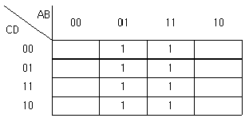
- A
- B
- C
- D
(정답률: 92%)
27. 혈압의 측정에 관한 설명으로 틀린 것은?
- 직접측정법은 혈압을 실시간으로 측정이 가능하다.
- 코르트코프 음(korotkoff sound)을 이용하여 간접적으로 측정할 수 있다.
- 직접측정법에는 압력센서가 필요하다.
- 간접측정법에는 카테터(catheter)가 필요하다.
(정답률: 92%)
28. 트랜지스터의 공통 이미터 접지 회로가 있을 때 콜렉터 전류가 4mA이고, 베이스 전류가 0.04mA이었다. 이 때 직류전류 증폭율은?
- 0.99
- 1
- 99
- 100
(정답률: 71%)
29. 공기 중의 투자율이 μo일 때 자극의 세기 mWb인 점 자극으로부터 나오는 총 자력선의 수는 몇 개인가?
- 1/m
- m
- μom
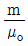
(정답률: 59%)
30. 연속 주입 지시액 희석법에 사용되는 Fick의 방법을 옳게 설명한 것은?
- 지시물질은 열이나 염료 등이다.
- 지시물질이 산소이기 때문에 독성이 없다.
- 카테터의 심박출량에 대한 영향이 크기 때문에 별도의 보정을 필요로 하다.
- Fick 방법에서 산소는 환자의 정맥을 통하여 주입된다.
(정답률: 67%)
31. 생체계측기기의 성능을 정량적으로 나타내기 위한 정적 특성에 대한 설명으로 옳은 것은?
- 정확도-측정치를 표시할 수 있는 유효숫자의 범위
- 해상도-참값과 측정값의 차이를 참값으로 나눈 것
- 정적감도-입력 증감에 대한 출력의 증감비
- 재현성-측정될 수 있는 최소의 증감치
(정답률: 72%)
32. 다음과 같은 진리표를 갖는 플립플롭은?
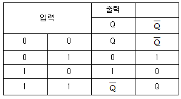
- D 플립플롭
- T 플립플롭
- JK 플립플롭
- RS 플립플롭
(정답률: 86%)
33. 마이크로프로세서 중 1개의 칩 내에 일정한 용량의 메모리와 입출력 제어 인터페이스 회로를 내장한 것은?
- 마이크로컨트롤러
- 프로그램 카운터
- 데이터버스
- 레지스터
(정답률: 70%)
34. 다음 내용과 가장 관련 있는 것은?
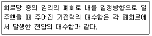
- 테브난의 정리
- 노튼의 정리
- 키르히호프의 제1법칙
- 키르히호프의 제2법칙
(정답률: 83%)
35. SMPS(Switching Mode Power Supply)회로 방식 중 비절연형 방식이 아닌 것은?
- Buck 방식
- Boost 방식
- Foreard 방식
- Buck-Boost 방식
(정답률: 87%)
36. 2분 동안에 2W의 전력을 소비하였을 때 일의 양은 얼마인가?(오류 신고가 접수된 문제입니다. 반드시 정답과 해설을 확인하시기 바랍니다.)
- 6J
- 40J
- 120J
- 360J
(정답률: 57%)
37. 혈액 및 생체조직검사처럼 신체로부터 분리된 생체조직을 센서를 이용하여 측정하는 방식은?
- 외부측정
- 침습적 측정
- 샘플 측정
- 표면 측정
(정답률: 89%)
38. 생체신호의 일반적인 특성이 아닌 것은?
- 신호의 크기가 매우 크다.
- 사람에 따라 신호크기, 모양의 차이를 보인다.
- 계측할 때 고도의 안정성과 신뢰도가 필요하다.
- 외부 환경에 민감한 영향을 받는다.
(정답률: 91%)
39. 생체신호를 측정하는 데 사용하는 전극 중 표면 전극이 아닌 것은?
- 건성전극
- 미세전극
- 흡착전극
- 가요성전극
(정답률: 84%)
40. 최대값이 Vm인 정현파의 실효값은?
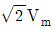
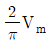
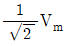
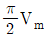
(정답률: 77%)
3과목: 의료안전ㆍ법규 및 정보
41. 의료가스의 용도로 틀린 것은?
- 구급용
- 마취용
- 인공호흡용
- 특수용접용
(정답률: 92%)
42. 인체에 대한 전류작용 중 근육의 지속적 수축, 호흡근 마비, 미주신경자극에 따른 심장의 억제나 심실세동이 발생할 수 있는 작용은 어떤 것인가?
- 열작용
- 자극작용
- 화학작용
- 자기작용
(정답률: 78%)
43. 의료기기법과 관련한 하위법령 및 규정이 틀린 것은?
- ‘의료기기법’은 의료기기의 효율적인 관리를 도모하고 나아가 국민보건 향상에 기여함을 목적으로 한다.
- ‘의료기기법 시행규칙’에서는 의료기기법 및 의료기기법시행령에서 위임된 사항과 그 시행에 필요한 사항을 규정하고 있다.
- '의료기기 임상시험 계획 승인 지침‘은 의료기기 임상시험계획 승인에 관한 세부사항을 정한 것이다.
- ‘의료기기 기준규격’은 의료기기 재평가에 관한 세부사항을 정한 것이다.
(정답률: 83%)
44. 의료폐기물 전용요기에 표시하는 종류와 도형색상이 연결이 올바른 것은?
- 재활용하는 태반:붉은색
- 격리의료폐기물:검정색
- 위해의료폐기물(상자형 용기):노란색
- 일반의료폐기물(봉투형 용기):녹색
(정답률: 83%)
45. 다음 전자파 중에서 전리 방사선은?
- 가시광선
- 극초단파
- 무선파
- 감마선
(정답률: 87%)
46. 의료기기법령상 의료기기의 수리업자가 준수하지 않아도 되는 것은?
- 허가 또는 인증을 받거나 신고한 내용과 다르게 변조하여 의료기기를 수리하지 말 것
- 의료기기를 수리한 경우 수리내용을 관할 시ㆍ도지사에게 제출할 것
- 의료기기를 수리한 경우에는 상호 및 주소를 해당 의료기기의 용기 또는 외장에 적을 것
- 의료기기의 수리를 의뢰한 자에 대하여 수리내역을 문서로 통보할 것
(정답률: 80%)
47. 의료기기 제조업자, 수입업자 또는 수리업자의 전년도의 생산 수출ㆍ수입ㆍ수리의 실적보고서를 한국의료기기산업협회에 언제까지 제출하도록 하고 있는가?
- 1월 31일
- 3월 15일
- 4월 15일
- 5월 31일
(정답률: 88%)
48. 혈압 검사 또는 맥파 검사용 기기의 품목이 아닌 것은?
- 맥파계
- 안저혈압계
- 혈압감시기
- 수은주식혈압계
(정답률: 76%)
49. 진단용 방사선 발생잔치에 해당되지 않는 것은?
- 유방 촬영용 장치
- 진단용 엑스선 장치
- 자기공명 영상 장치
- 전산화 단층 촬영 장치
(정답률: 84%)
50. 산화에틸렌(EO) 멸균 공정에 해당하지 않는 것은?
- 프리컨디셔닝
- 플러싱
- 통기
- 커미셔닝
(정답률: 79%)
51. 시스템이 서로 다른 병원 내의 타부서 또는 의료기기나 간의 의료정보를 전달하기 위한 국제 표준 프로토콜은?
- HL7
- OCS
- EMR
- EHR
(정답률: 77%)
52. 의료기기에 적합한 온도를 측정하는 방법으로 틀린 것은?
- 시험 중에는 열감지 차단기를 정지시키지 않는다.
- 시험하는 부분의 온도에 줄 영향을 무시 할 수 있도록 측정기를 선정하고 배치하여 실시한다.
- 동 권선의 온도 상승치를 측정할 때 시험개시 시 권선의 온도는 실온보다 낮아야 한다.
- 시험 종료 시의 권선저항을 스위치 오프 후 가능한 한 빨리 측정하고 이어서 단시간 간격으로 몇 회 측정할 것을 권한다.
(정답률: 71%)
53. 진단용 방사선 촬영 장치의 차폐시설 외측에서 측정한 방사선 누설선량 및 산란선량의 주당 합계는 몇 C/kg 이하여야 하는가?
- 1.46×10-4C/kg
- 5.2×10-4C/kg
- 2.58×10-5C/kg
- 30.9×10-5C/kg
(정답률: 67%)
54. 레이저 광선에 대한 안전 관리 방법으로 틀린 것은?
- 레이저 사용 시 레이저 보안경, 젖은 안대나 레이저 전문 눈 보호기 등을 착용하여 눈을 보호하여야 한다.
- 국제규격에 따라 레이저 방사를 주의하도록 경고하는 표시를 레이저기기의 본체와 레이저 방사구에 부착하여야 한다.
- 광선이 우연히 전달되는 것을 막기 위하여 장막을 이용해 치료 공간 내의 창문이나 기타 모든 뚫려있는 구멍들을 막아야 한다.
- 레이저 시술 동안에는 시술부위 이외에 환자든 의료인이든 모든 피부의 노출은 금지해야 하며, 피부 보호 장비와 의류, 장갑들을 모두 내구성이 있는 것이어야 한다.
(정답률: 65%)
55. 다음 중 의료용 접지방식이 아닌 것은?
- 보호 접지
- 등전위 접지
- 정전기 장해 방지용 접지
- 신호용 접지
(정답률: 86%)
56. 의학 자료의 코드화에 관한 설명 중 틀린 것은?
- 의학 자료를 코드화하면 데이터의 양적 감소가 일어난다.
- 연상코드를 부여함으로써 항목을 쉽게 알아볼 수 있다.
- 코드화를 통해 데이터의 접성이 향상된다.
- 숫자코드를 사용하면 새로운 코드의 생성이 쉽지 않다.
(정답률: 81%)
57. 전기쇼크 중 마이크로 쇼크에 대한 설명으로 틀린 것은?
- 마이크로쇼크는 A 정도의 전류다.
- 마이크로쇼크는 심장에 직접 가해지는 매우 낮은 전류에 의한 전기적 충격을 말한다.
- 마이크로쇼크는 100μA 정도의 매우 낮은 전류에서도 일어날 수 있다.
- 전류의 유입점, 유출점 어느 한쪽이 심근에 접하고 있거나 가까이 있을 때 일어날 수 있는 쇼크이다.
(정답률: 73%)
58. 제조자가 별도로 기술하지 않은 경우 성인 환자를 지지 및 현수하는 부분을 설계할 때의 환자 최소질량은?
- 65kg
- 80kg
- 110kg
- 135kg
(정답률: 75%)
59. ICPC분류체계에 관한 설명 중 틀린 것은?
- 외래방문, 입원, 수술 등의 임상적 상황을 코드화하는 데 사용하기 위하여 제공하였다.
- 해부치료 화학적 코드라고도 불린다.
- 제약모듈에서 데이터와 약 코드가 자동으로 생성되어 저장된다.
- SOAP 원리를 코드화하는 데 쓰인다.
(정답률: 71%)
60. 환자의 과거, 현재의 건강과 진료를 포함하여 생활력과 건강력의 적합한 사실을 장기적으로 모아 전자적인 건강정보로 기록한 것은?
- Automated medical Record(AMR)
- Computerized medical Record(CMR)
- Electronic Smart Record(ESR)
- Electronic Health Record(EHR)
(정답률: 86%)
4과목: 의료기기
61. 심박출량 측정법 중 저온이나 고온의 액체(식염수)를 지시물질로 주입하여 서미스터 등으로 검출하는 방법은?
- 온도 희석법
- 임피던스 희석법
- 지시약 희석법
- Fick's법
(정답률: 69%)
62. 다음 중 기능 저하로 혈압이 떨어지면 뇌로 가는 혈류량이 적어져 뇌에 공급되는 산소가 줄어드는 문제를 방지하기 위해 기계 장치로 심박출량 증가를 위한 심장 기능을 보조하는 의료기기는?
- Linac(Linear accelerator)
- IABP(Intra Aortic Balloon Pump)
- MRI(Magretic Resonance Imaging)
- PET(Positron Emission Tomography)
(정답률: 83%)
63. 체외충격파쇄석기의 구성요소가 아닌 것은?
- 충격파 발생장치
- 충격파 전달매체
- 충격파 여과장치
- 위치 측정장치
(정답률: 68%)
64. 다음 중 정확한 해부학적 정보와 암 진단 등에 필요한 생화학적인 정보를 영상으로 제공하여 암의 진단 등에 사용되는 것은?
- Incubator
- PET
- ECG
- TENS
(정답률: 84%)
65. 양전자방출형단층촬영장치(PET)에 대한 설명 중 틀린 것은?
- 인체 내에서 양전자를 방출하는 방사성 동위원소로부터 영상을 얻는다.
- 방출된 양전자는 주위의 전자와 결합하여 질량소실이 일어난다.
- 방출된 두 개의 감마(γ)선이 합쳐져 일정한 방향으로 진행한다.
- PET에 사용되는 방사성 동위원소는 반감기가 짧다.
(정답률: 75%)
66. 마취기 시스템의 구성요소가 아닌 것은?
- 호흡시스템(breathing system)
- 증발기(vaporizers)
- 유압계(flowmeters)
- 혈액투석기(hemodialysis)
(정답률: 81%)
67. 체외충격파쇄석기의 에너지 발생원 중 금속막을 전자석으로 진동시켜 발생되는 압력파를 집속하여 충격파를 만드는 방식은?
- 수중방전 방식
- 전자진동 방식
- 미소발파 방식
- 압전소자 방식
(정답률: 80%)
68. 환자가 자연스런 호흡은 하면서 인공호흡기가 정해진 1회 호흡량을 정해진 횟수에 따라 절단하는 방식으로 환자의 자발적인 호흡 사이에 치료자가 설정한 강제적 환기를 삽입하는 형태의 호흡조절방식은?
- VCV
- CMV
- PEEP
- IMV
(정답률: 86%)
69. 다음 중 재택의료기기의 진단 항목으로 가장 적합하지 않은 것은?
- 뇌전도 및 안전도
- 심전도 및 혈당
- 체온 및 체지방
- 혈압 및 혈중산소포화농도
(정답률: 85%)
70. X-선관의 양극에 발생하는 열량을 표현한 것으로 옳은 것은? (단, E:관접압, I:관전류, T:노출시간이고, 단상전파정류회로(n=1)로 가정한다.
- HU=E×I×T
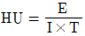
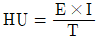
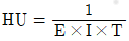
(정답률: 66%)
71. 혈압에 영향을 미치는 내용과 그 설명으로 옳은 것은?
- 혈관저항:세동맥의 직경이 가능수록 혈관 저항이 증가하여 혈압은 높아진다.
- 혈류:혈관저항이 일정하면 심장에서 나가는 혈액량과 상관없이 혈압은 변하지 않는다.
- 혈액의 점도:혈액의 점도는 높을수록 혈압이 낮아진다.
- 대동맥의 탄력성:혈관의 탄성이 떨어지면 혈류 속도가 낮아지기 때문에 혈압이 낮아진다.
(정답률: 66%)
72. 전기수술기의 원리에 대한 설명 중 틀린 것은?
- 전기수술기의 구동방식에는 단극 방식과 양극방식이 있는데 차이점은 단극 방식은 대극판과 전극을 사용하고 양극 방식은 핀셋 모양의 전극을 사용한다.
- 전기 수술기의 작용은 절개, 응고, 지혈 등 크게 3가지로 절개는 응고보다 더 높은 출력을 필요로 하기 때문에 응고시킬 때보다 높은 주파수의 전류를 사용한다.
- 대극판은 체내에 흐르는 전류를 체외로 손실되지 않도록 집중시켜주는 역할을 한다.
- 단극방식에 비해 양극 방식의 출력이 더 작다.
(정답률: 58%)
73. 임상검사기기 분광광도계 구성 중 시료에 입사시킬 특정한 파장을 선택하기 위한 것으로 색유리를 통과시킴으로서 색유리 파장보다 긴 파장대역을 흡수하고 짧은 파장대역을 통과시키는 기능을 하는 것은?
- 유리필터
- 간섭필터
- 큐벳
- 프리즘
(정답률: 64%)
74. 혈관 속의 적혈구에 적외선의 흡수량을 측정하여 정맥기능을 진단하는 방법으로 정맥재충전시간(venous refilling time)을 측정하는 것은?
- 전자 유량계
- 초음파 유속계
- 광혈류 측정계
- 전기임피던스 유량계
(정답률: 83%)
75. 체내에 일정한 교류 전류를 흘린 후 임피던스를 측정하여 체내의 수분, 단백질, 지방성분 등을 측정하는 의료기기는?
- 근전도계
- 체성분 분석기
- 혈액투석기
- 전기수술기
(정답률: 88%)
76. 신생아 보육기의 주요 기능이 아닌 것은?
- 온도조절
- 습도조절
- 혈당조절
- 통풍조절
(정답률: 86%)
77. 초음파의 물리적 특성으로 틀린 것은?
- 음파는 반드시 매질이 있어야 진행할 수 있다.
- 음파는 진동하는 주파수를 갖는다.
- 초음파 영상에서는 실 모양의 초음파 빔을 인체의 표피에 조사한다.
- 음향임피던스 단위는 dB를 쓴다.
(정답률: 71%)
78. 인공심폐기(heart-lung machine)에 관한 설명으로 틀린 것은?
- 심장과 폐의 대체 역할을 위한 의료기기로 혈액에 산소를 공급하여 순환시키는 기능을 한다.
- 심장의 우심방에서 나온 혈액을 산화기를 거쳐 대동맥으로 보낸다.
- 개심술 중에는 인체의 산소 소모량을 줄이기 위한 저체온법, 표면 냉각법, 중심 냉각법 등을 사용한다.
- 인공심폐기는 최소한의 Lung volume을 유지하여 폐 손상과 부종을 감소시킨다.
(정답률: 60%)
79. X-선관에 인가하는 전압이 100kVp일 때, 이 X-선관에서 나올 수 있는 광자의 최대 에너지는?
- 50keV
- 100keV
- 150keV
- 200keV
(정답률: 79%)
80. 물의 감쇠계수가 0.190cm-1이고 지방의 감쇠계수가 0.171cm-1일 때, 지방의 CT-번호는?
- -100
- 100
- -50
- 50
(정답률: 59%)
5과목: 의용기계공학
81. 직경이 5mm인 뼈 공정용 핀은 316L 스테인리스 스틸(stainless steel)로 만들어졌다. 표점거리가 150mm인 이 시편에 축 방향으로 200kN의 인장 하중(Load)을 가하여 탄성변형이 일어났다. 면 표점거리는 얼마로 늘어나겠는가? (단, 스테인리스 스틸의 탄성계수(Elastic Modulus):200GPa이다.)
- 151.9mm
- 156.0mm
- 157.6mm
- 174.0mm
(정답률: 58%)
82. 나사산의 단면 모양이 다른 것은?
- 미터 나사
- 유니파이 나사
- 관용 나사
- 사각 나사
(정답률: 69%)
83. 316L 스테인레스강에서 Mo이 하는 역할은?
- 표면 산화피막 형성
- 내부식성 향상
- 구조의 안정화
- 기계가공성 향상
(정답률: 77%)
84. 지면반발력(GRF)에 대한 설명으로 가장 적합한 것은?
- 하지 근육에 작용하는 힘
- 인체의 내부에서 작용되는 힘
- 보행시 반작용으로 인체가 받는 힘
- 두 발로 서 있을 때 지면에 전달되는 힘
(정답률: 76%)
85. 생체조직의 수동적인 전기 특성에 대한 설명으로 틀린 것은?
- 주파수의 증가와 함께 도전율은 증가한다.
- 일반적으로 저주파 영역에서는 도전성이 지배적이다.
- 일반적으로 고주파 영역에서는 유전성이 지배적이다.
- 생체조직의 등가회로에서 세포막은 인덕터로 작용한다.
(정답률: 70%)
86. 방사선 진단영역에서 전자기파 방사선과 인체조직과의 상호작용 중 에너지가 낮은 X선에 의해 뼈에서 주로 발생하는 상호작용은?
- 3전자 생성(Triplet production)
- 광핵 반응(Photo disintegration)
- 광전 효과(Photoelectric effect)
- 전자쌍 생성(Pair production)
(정답률: 74%)
87. 수술용 봉합사 재료 중 분해성 재료에 해당하는 것은?
- 실크
- polumide
- cotton
- PGA(poly Glycolic Acid)
(정답률: 84%)
88. 수막 형성이 용이하여 윤활 특성을 나타내는 생체 이식용 세라믹 재료는?
- 탄소 세라믹스(Carbon ceramics)
- 바이오글라스(Bioglass)
- 알루미나(Alumina)
- 지르코니아(Zirconia)
(정답률: 68%)
89. 차례로 물리는 간격의 돌기(齒, tooth)에 의하여 회전이나 동력을 전달시키는 장치는?
- 기어
- 마찰자
- 체인과 스프로킷 휠
- 벨트전동
(정답률: 78%)
90. 하지의지의 종류가 아닌 것은?
- 고관절의지
- 슬관절의지
- 대퇴의지
- 견갑의지
(정답률: 87%)
91. 인체관절에 미치는 영향에 따른 보조기의 종류가 아닌 것은?
- 보호용 보조기
- 보조용 보조기
- 증진용 보조기
- 교정용 보조기
(정답률: 75%)
92. 골수 내 고정로드로 사용하는 금속재료로 티타늄이 316L-SUS나 Co-Cr 합금에 비하여 장점이 되지 않는 기계적 성질은?
- 탄성계수가 자연 골에 가깝다.
- 비중이 더 작다.
- 응력부식이 없다.
- 무게가 가볍다.
(정답률: 55%)
93. 다음 중 방사선 흡수선량의 단위가 아닌 것은?
- Gy(그레이)
- rad
- J/kg
- R(뢴트겐)
(정답률: 72%)
94. 의용금속재료의 공통적 특징에 대한 설명으로 틀린 것은?
- 상온에서 고체 상태이다.
- 강도가 크고 가공변형이 쉽다.
- 열 및 전기의 좋은 전도체이다.
- 비중이 작고 금속적 광택이 있다.
(정답률: 71%)
95. 흉곽근육과 폐의 음향저항(Acoustic Impedance)이 각각 1.70, 0.004일 때, 흉곽근육과 폐의 경계면에서 반사되는 포음파의 반사율은?
- 0.1%
- 99.9%
- 0.068%
- 42.5%
(정답률: 48%)
96. 구름 베어링에서 안지름을 나타내는 기호가 04일 때 안지름은?
- 10mm
- 15mm
- 17mm
- 20mm
(정답률: 74%)
97. 생체재료의 기계적 평가를 위한 인장 특성 평가에 대한 설명 중 틀린 것은?
- 시험편에 압축하중을 가하여 시편의 길이 변화를 측정하는 시험이다.
- 인장 시험을 통해 하중-길이변화 곡선을 얻을 수 있다.
- 인장 시험에서 측정된 하중은 단위 단면적당 받는 응력(stress)으로 환산될 수 있다.
- 인장 시험에서 시편의 늘어난 길이는 변위(strain)값으로 환산 된다.
(정답률: 63%)
98. 살아있는 생체에 직접 또는 간접적으로 접촉하여 생체의 조직이나 장기 또는 생체 기능의 일부 혹은 전체를 대신하거나 보완해 주는 데 사용되는 보든 재료로 정의되는 것은?
- 생체재료
- 인공재료
- 자연재료
- 산업재료
(정답률: 82%)
99. 세라믹 생체재료 중에서 Ca(칼슘)과 P(인)의 주성분인 생체활성 세라믹은?
- 지르코니아
- 수산화인화석
- 알루미나
- 생체유리
(정답률: 84%)
100. 초음파에 대한 설명으로 틀린 것은?
- 공기를 함유한 조직을 잘 통과한다.
- 약 20kHz 이상의 음파를 초음파라 한다.
- 음향 임피던스는 밀도와 음속의 ㄱ보으로 나타낸다.
- 생체 조직에서의 감쇠계수는 주파수에 거의 비례한다.
(정답률: 76%)